d_rct.RmdRandomized Control Trials (RCTs) are widely regarded as the gold standard for causal inference. The fundamental appeal of an RCT lies in its simplicity: by randomly assigning units (individuals, firms, classrooms, villages) to treatment and control conditions, the researcher breaks any systematic association between the treatment and potential confounders. This means that any observed difference in outcomes between treated and control groups can be attributed to the causal effect of the treatment, rather than to pre-existing differences between groups.
RCTs have a long history in medicine (clinical trials), but their use has expanded dramatically into economics, political science, education, development, and technology (A/B testing). Key advantages include:
When are RCTs appropriate?
The modern statistical framework for causal inference rests on the potential outcomes notation introduced by Neyman (1923) and formalized by Rubin (1974). For each unit , we define two potential outcomes:
The individual treatment effect (ITE) is:
The fundamental problem of causal inference (Holland, 1986) is that we can never observe both and for the same unit at the same time. We observe:
where is the treatment indicator.
Three causal estimands are commonly of interest:
In a perfectly randomized experiment, is independent of potential outcomes, so .
The potential outcomes framework requires the Stable Unit Treatment Value Assumption (SUTVA), which has two components:
No interference: The potential outcomes for unit depend only on the treatment assigned to unit , not on the treatments assigned to other units. Formally: .
No hidden variations of treatment: There is only one version of each treatment level. All treated units receive the same treatment.
SUTVA violations are common when there are spillover effects (e.g., vaccination reduces disease for untreated neighbors), general equilibrium effects (e.g., a job training program reduces wages for non-participants), or when the treatment is implemented differently for different units.
Under random assignment, treatment status is independent of potential outcomes:
This independence implies:
The simple difference in means between treated and control groups is an unbiased estimator of the ATE. No regression, matching, or other statistical adjustments are required for identification. This is the core power of randomization.
The selection bias term that plagues observational studies:
is exactly zero in expectation under random assignment.
There are two inferential frameworks for RCTs:
Design-based (randomization) inference: Treats potential outcomes as fixed and the randomization assignment as the source of randomness. Inference is exact and based on permutations of the treatment vector. This is the Fisher/Neyman tradition.
Sampling-based (super-population) inference: Treats both the potential outcomes and the assignment as random draws from a larger population. Standard errors and confidence intervals are based on the central limit theorem. This is the approach underlying OLS regression.
Both approaches are valid. Design-based inference (randomization inference) can be more appropriate for small samples, while sampling-based inference is standard in practice.
We now generate a rich simulated dataset that includes multiple covariates, strata (blocks), and clusters. This will allow us to demonstrate a variety of RCT analysis techniques throughout the vignette.
set.seed(42)
n <- 500
# --- Cluster and strata structure ---
n_clusters <- 50
cluster_id <- rep(1:n_clusters, each = n / n_clusters)
# Strata based on region (4 regions)
stratum <- rep(rep(1:4, each = n / (n_clusters * 4)), n_clusters)
# If lengths don't match perfectly, recycle
stratum <- rep(1:4, length.out = n)
# --- Covariates ---
age <- rnorm(n, mean = 40, sd = 10)
income <- rnorm(n, mean = 50000, sd = 15000)
educ <- sample(1:4, n, replace = TRUE) # education level (1=HS, 2=BA, 3=MA, 4=PhD)
female <- rbinom(n, 1, 0.52)
baseline <- rnorm(n, mean = 100, sd = 15) # baseline outcome measure
# --- Random assignment (simple random assignment) ---
treatment <- sample(c(0, 1), n, replace = TRUE)
# --- Potential outcomes and observed outcome ---
# True ATE = 2.5, with some heterogeneity by education
tau_i <- 2.5 + 0.5 * (educ - 2) # HTE: higher education -> larger effect
outcome <- 5 + 0.1 * age + 0.00005 * income + 1.2 * educ +
0.3 * baseline + 0.8 * female +
tau_i * treatment + rnorm(n, sd = 3)
# --- Assemble data frame ---
rct_data <- data.frame(
outcome = outcome,
treatment = treatment,
age = age,
income = income,
educ = educ,
female = female,
baseline = baseline,
stratum = factor(stratum),
cluster_id = factor(cluster_id)
)
head(rct_data)
#> outcome treatment age income educ female baseline stratum cluster_id
#> 1 46.76262 1 53.70958 65437.11 3 1 90.97926 1 1
#> 2 47.80032 0 34.35302 63721.62 2 0 97.96276 2 1
#> 3 40.70009 0 43.63128 49963.16 1 1 85.19091 3 1
#> 4 47.30314 0 46.32863 52040.14 3 1 112.47888 4 1
#> 5 42.16221 1 44.04268 39197.70 4 0 88.07411 1 1
#> 6 48.26618 0 38.93875 47028.14 4 0 105.10697 2 1
str(rct_data)
#> 'data.frame': 500 obs. of 9 variables:
#> $ outcome : num 46.8 47.8 40.7 47.3 42.2 ...
#> $ treatment : num 1 0 0 0 1 0 1 1 0 1 ...
#> $ age : num 53.7 34.4 43.6 46.3 44 ...
#> $ income : num 65437 63722 49963 52040 39198 ...
#> $ educ : int 3 2 1 3 4 4 4 3 3 4 ...
#> $ female : int 1 0 1 1 0 0 1 0 1 0 ...
#> $ baseline : num 91 98 85.2 112.5 88.1 ...
#> $ stratum : Factor w/ 4 levels "1","2","3","4": 1 2 3 4 1 2 3 4 1 2 ...
#> $ cluster_id: Factor w/ 50 levels "1","2","3","4",..: 1 1 1 1 1 1 1 1 1 1 ...Key features of this simulated data:
Even though randomization guarantees balance in expectation, it is good practice to verify that covariates are balanced across treatment and control groups in any given sample. Balance checks can detect implementation problems, protocol deviations, or simply bad luck in the random draw.
A natural first step is to compare covariate means across treatment arms.
balance_vars <- c("age", "income", "educ", "female", "baseline")
balance_table <- rct_data %>%
group_by(treatment) %>%
summarise(
n = n(),
age_mean = mean(age),
income_mean = mean(income),
educ_mean = mean(educ),
female_mean = mean(female),
baseline_mean = mean(baseline),
.groups = "drop"
)
balance_table
#> # A tibble: 2 × 7
#> treatment n age_mean income_mean educ_mean female_mean baseline_mean
#> <dbl> <int> <dbl> <dbl> <dbl> <dbl> <dbl>
#> 1 0 226 40.2 48548. 2.51 0.544 101.
#> 2 1 274 39.3 50606. 2.54 0.536 100.A common metric for balance is the standardized mean difference (SMD), defined as:
where are the group means and are the group variances. A rule of thumb is that indicates good balance.
compute_smd <- function(data, var, treat_var = "treatment") {
x1 <- data[[var]][data[[treat_var]] == 1]
x0 <- data[[var]][data[[treat_var]] == 0]
pooled_sd <- sqrt((var(x1) + var(x0)) / 2)
(mean(x1) - mean(x0)) / pooled_sd
}
smd_results <- data.frame(
variable = balance_vars,
SMD = sapply(balance_vars, function(v) compute_smd(rct_data, v))
)
smd_results$abs_SMD <- abs(smd_results$SMD)
smd_results$balanced <- ifelse(smd_results$abs_SMD < 0.1, "Yes", "No")
smd_results
#> variable SMD abs_SMD balanced
#> age age -0.10304297 0.10304297 No
#> income income 0.13283675 0.13283675 No
#> educ educ 0.02731496 0.02731496 Yes
#> female female -0.01552270 0.01552270 Yes
#> baseline baseline -0.04560778 0.04560778 Yes
ggplot(smd_results, aes(x = reorder(variable, abs_SMD), y = SMD)) +
geom_point(size = 3) +
geom_hline(yintercept = c(-0.1, 0, 0.1), linetype = c("dashed", "solid", "dashed"),
color = c("red", "black", "red")) +
coord_flip() +
labs(
x = "Covariate",
y = "Standardized Mean Difference",
title = "Covariate Balance: Standardized Mean Differences"
) +
causalverse::ama_theme()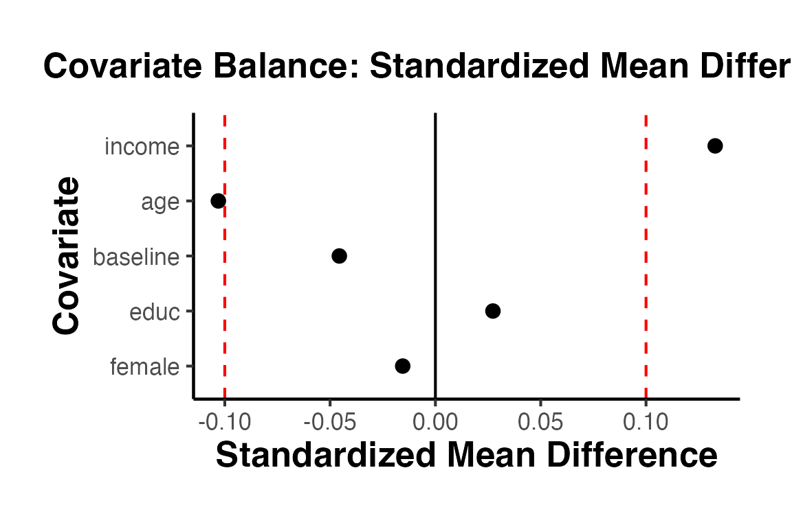
Points falling between the dashed red lines () indicate good balance. Under successful randomization, we expect all covariates to be well-balanced.
We can also conduct individual t-tests for each covariate.
balance_tests <- lapply(balance_vars, function(v) {
tt <- t.test(as.formula(paste(v, "~ treatment")), data = rct_data)
data.frame(
variable = v,
mean_control = tt$estimate[1],
mean_treated = tt$estimate[2],
difference = diff(tt$estimate),
p_value = tt$p.value
)
})
balance_tests_df <- do.call(rbind, balance_tests)
balance_tests_df
#> variable mean_control mean_treated difference p_value
#> mean in group 0 age 4.024231e+01 3.925185e+01 -9.904640e-01 0.2467201
#> mean in group 01 income 4.854841e+04 5.060599e+04 2.057583e+03 0.1403444
#> mean in group 02 educ 2.513274e+00 2.543796e+00 3.052128e-02 0.7607785
#> mean in group 03 female 5.442478e-01 5.364964e-01 -7.751437e-03 0.8629170
#> mean in group 04 baseline 1.008391e+02 1.001518e+02 -6.872949e-01 0.6117679We expect most p-values to be large (non-significant), consistent with successful randomization. Note that even with perfect randomization, we expect roughly 5% of tests to reject at the 5% level by chance alone.
balance_assessment()
Individual variable-by-variable tests suffer from a multiple testing problem. The causalverse::balance_assessment() function provides two joint tests of balance:
Seemingly Unrelated Regression (SUR): Estimates a system of equations where each covariate is regressed on the treatment indicator, accounting for correlations across equations. A joint F-test across all equations tests whether treatment predicts any covariate.
Hotelling’s T-squared test: A multivariate generalization of the two-sample t-test that simultaneously tests equality of means across all covariates.
bal_results <- causalverse::balance_assessment(
data = rct_data,
treatment_col = "treatment",
"age", "income", "educ", "female", "baseline"
)
# SUR results (joint F-test across all equations)
print(bal_results$SUR)
#>
#> systemfit results
#> method: SUR
#>
#> N DF SSR detRCov OLS-R2 McElroy-R2
#> system 2500 2490 1.19267e+11 1.54494e+12 0.004377 0.001519
#>
#> N DF SSR MSE RMSE R2 Adj R2
#> ageeq 500 498 4.70405e+04 9.44589e+01 9.71900e+00 0.002576 0.000573
#> incomeeq 500 498 1.19267e+11 2.39492e+08 1.54755e+04 0.004377 0.002378
#> educeq 500 498 6.24435e+02 1.25388e+00 1.11977e+00 0.000185 -0.001823
#> femaleeq 500 498 1.24193e+02 2.49383e-01 4.99382e-01 0.000060 -0.001948
#> baselineeq 500 498 1.13240e+05 2.27389e+02 1.50794e+01 0.000516 -0.001491
#>
#> The covariance matrix of the residuals used for estimation
#> ageeq incomeeq educeq femaleeq baselineeq
#> ageeq 94.458900 -7.64381e+02 1.2582719 0.1897455 -0.170714
#> incomeeq -764.381394 2.39492e+08 1653.8166478 144.6663687 -3795.284071
#> educeq 1.258272 1.65382e+03 1.2538848 -0.0583749 -0.278415
#> femaleeq 0.189745 1.44666e+02 -0.0583749 0.2493826 0.378522
#> baselineeq -0.170714 -3.79528e+03 -0.2784149 0.3785219 227.388995
#>
#> The covariance matrix of the residuals
#> ageeq incomeeq educeq femaleeq baselineeq
#> ageeq 94.458900 -7.64381e+02 1.2582719 0.1897455 -0.170714
#> incomeeq -764.381394 2.39492e+08 1653.8166478 144.6663687 -3795.284071
#> educeq 1.258272 1.65382e+03 1.2538848 -0.0583749 -0.278415
#> femaleeq 0.189745 1.44666e+02 -0.0583749 0.2493826 0.378522
#> baselineeq -0.170714 -3.79528e+03 -0.2784149 0.3785219 227.388995
#>
#> The correlations of the residuals
#> ageeq incomeeq educeq femaleeq baselineeq
#> ageeq 1.00000000 -0.0050821 0.1156177 0.0390946 -0.00116483
#> incomeeq -0.00508210 1.0000000 0.0954362 0.0187193 -0.01626351
#> educeq 0.11561768 0.0954362 1.0000000 -0.1043913 -0.01648842
#> femaleeq 0.03909461 0.0187193 -0.1043913 1.0000000 0.05026587
#> baselineeq -0.00116483 -0.0162635 -0.0164884 0.0502659 1.00000000
#>
#>
#> SUR estimates for 'ageeq' (equation 1)
#> Model Formula: age ~ treatment
#> <environment: 0x14941fe18>
#>
#> Estimate Std. Error t value Pr(>|t|)
#> (Intercept) 40.242312 0.646498 62.24661 < 2e-16 ***
#> treatment -0.990464 0.873327 -1.13413 0.25729
#> ---
#> Signif. codes: 0 '***' 0.001 '**' 0.01 '*' 0.05 '.' 0.1 ' ' 1
#>
#> Residual standard error: 9.718997 on 498 degrees of freedom
#> Number of observations: 500 Degrees of Freedom: 498
#> SSR: 47040.531952 MSE: 94.4589 Root MSE: 9.718997
#> Multiple R-Squared: 0.002576 Adjusted R-Squared: 0.000573
#>
#>
#> SUR estimates for 'incomeeq' (equation 2)
#> Model Formula: income ~ treatment
#> <environment: 0x14941e608>
#>
#> Estimate Std. Error t value Pr(>|t|)
#> (Intercept) 48548.41 1029.42 47.16109 <2e-16 ***
#> treatment 2057.58 1390.60 1.47964 0.1396
#> ---
#> Signif. codes: 0 '***' 0.001 '**' 0.01 '*' 0.05 '.' 0.1 ' ' 1
#>
#> Residual standard error: 15475.52454 on 498 degrees of freedom
#> Number of observations: 500 Degrees of Freedom: 498
#> SSR: 119266946173.406 MSE: 239491859.785956 Root MSE: 15475.52454
#> Multiple R-Squared: 0.004377 Adjusted R-Squared: 0.002378
#>
#>
#> SUR estimates for 'educeq' (equation 3)
#> Model Formula: educ ~ treatment
#> <environment: 0x149420d08>
#>
#> Estimate Std. Error t value Pr(>|t|)
#> (Intercept) 2.5132743 0.0744860 33.74157 < 2e-16 ***
#> treatment 0.0305213 0.1006200 0.30333 0.76176
#> ---
#> Signif. codes: 0 '***' 0.001 '**' 0.01 '*' 0.05 '.' 0.1 ' ' 1
#>
#> Residual standard error: 1.11977 on 498 degrees of freedom
#> Number of observations: 500 Degrees of Freedom: 498
#> SSR: 624.43463 MSE: 1.253885 Root MSE: 1.11977
#> Multiple R-Squared: 0.000185 Adjusted R-Squared: -0.001823
#>
#>
#> SUR estimates for 'femaleeq' (equation 4)
#> Model Formula: female ~ treatment
#> <environment: 0x149423408>
#>
#> Estimate Std. Error t value Pr(>|t|)
#> (Intercept) 0.54424779 0.03321841 16.38392 < 2e-16 ***
#> treatment -0.00775144 0.04487336 -0.17274 0.86293
#> ---
#> Signif. codes: 0 '***' 0.001 '**' 0.01 '*' 0.05 '.' 0.1 ' ' 1
#>
#> Residual standard error: 0.499382 on 498 degrees of freedom
#> Number of observations: 500 Degrees of Freedom: 498
#> SSR: 124.192559 MSE: 0.249383 Root MSE: 0.499382
#> Multiple R-Squared: 6e-05 Adjusted R-Squared: -0.001948
#>
#>
#> SUR estimates for 'baselineeq' (equation 5)
#> Model Formula: baseline ~ treatment
#> <environment: 0x149425b08>
#>
#> Estimate Std. Error t value Pr(>|t|)
#> (Intercept) 100.839096 1.003068 100.53064 < 2e-16 ***
#> treatment -0.687295 1.355003 -0.50723 0.61222
#> ---
#> Signif. codes: 0 '***' 0.001 '**' 0.01 '*' 0.05 '.' 0.1 ' ' 1
#>
#> Residual standard error: 15.079423 on 498 degrees of freedom
#> Number of observations: 500 Degrees of Freedom: 498
#> SSR: 113239.719373 MSE: 227.388995 Root MSE: 15.079423
#> Multiple R-Squared: 0.000516 Adjusted R-Squared: -0.001491
# Hotelling's T-squared test
print(bal_results$Hotelling)
#> Test stat: 3.7871
#> Numerator df: 5
#> Denominator df: 494
#> P-value: 0.5854A non-significant Hotelling test (large p-value) indicates that we cannot reject the null hypothesis of equal covariate means across groups. This is the expected result under successful randomization.
plot_density_by_treatment()
Density plots provide an intuitive visual check of covariate balance. The causalverse::plot_density_by_treatment() function generates a list of density plots, one per covariate, overlaid by treatment group.
density_plots <- causalverse::plot_density_by_treatment(
data = rct_data,
var_map = list(
"age" = "Age",
"income" = "Income",
"educ" = "Education Level",
"female" = "Female",
"baseline" = "Baseline Outcome"
),
treatment_var = c("treatment" = "Treatment Group"),
theme_use = causalverse::ama_theme()
)
# Display individual plots
density_plots[["Age"]]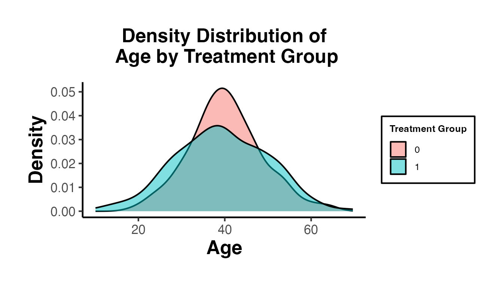
density_plots[["Income"]]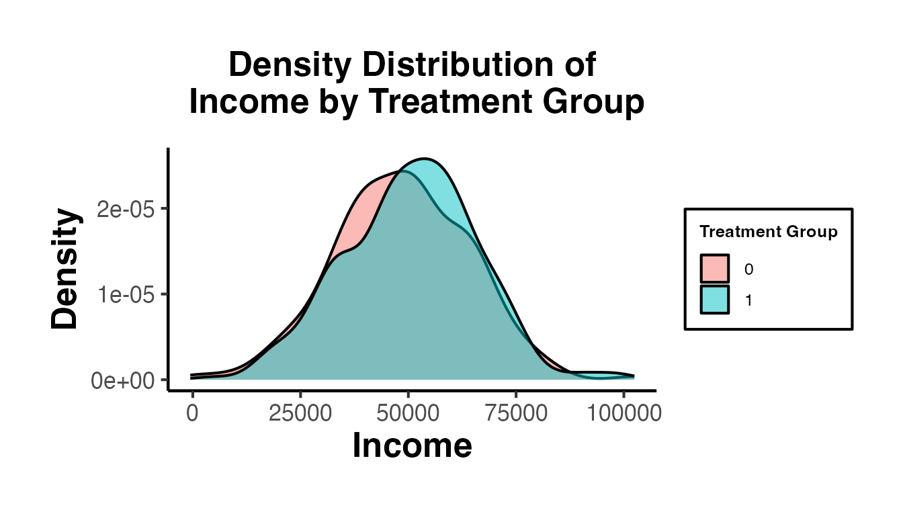
density_plots[["Baseline Outcome"]]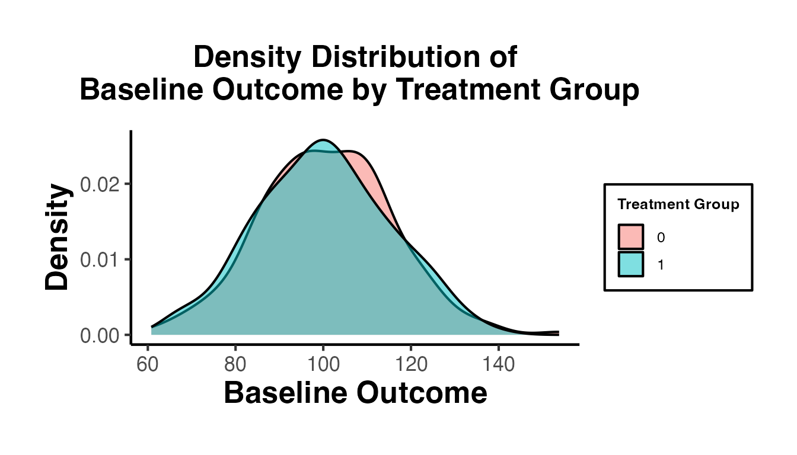
Overlapping density curves across treatment and control groups indicate good balance. Large visible shifts between the distributions would raise concern about the integrity of the randomization.
The most basic and transparent estimator for the ATE in an RCT is the simple difference in group means. Under random assignment, this is unbiased for the ATE.
t_result <- t.test(outcome ~ treatment, data = rct_data)
t_result
#>
#> Welch Two Sample t-test
#>
#> data: outcome by treatment
#> t = -7.4495, df = 495.47, p-value = 4.197e-13
#> alternative hypothesis: true difference in means between group 0 and group 1 is not equal to 0
#> 95 percent confidence interval:
#> -3.002934 -1.749505
#> sample estimates:
#> mean in group 0 mean in group 1
#> 14.64116 17.01738The estimated treatment effect from the t-test is approximately -2.376. Note that t.test() computes “group 0 mean minus group 1 mean,” so we negate the difference to get the treatment effect in the conventional direction.
# Manual difference in means
mean_treated <- mean(rct_data$outcome[rct_data$treatment == 1])
mean_control <- mean(rct_data$outcome[rct_data$treatment == 0])
cat("Mean (treated):", round(mean_treated, 3), "\n")
#> Mean (treated): 47.759
cat("Mean (control):", round(mean_control, 3), "\n")
#> Mean (control): 45.548
cat("Difference in means (ATE estimate):", round(mean_treated - mean_control, 3), "\n")
#> Difference in means (ATE estimate): 2.211fixest::feols()
Equivalently, we can estimate the ATE via OLS regression. The coefficient on the treatment indicator is numerically identical to the difference in means.
model_basic <- fixest::feols(outcome ~ treatment, data = rct_data)
summary(model_basic)
#> OLS estimation, Dep. Var.: outcome
#> Observations: 500
#> Standard-errors: IID
#> Estimate Std. Error t value Pr(>|t|)
#> (Intercept) 14.64116 0.220335 66.44968 < 2.2e-16 ***
#> treatment 2.37622 0.319359 7.44059 4.4281e-13 ***
#> ---
#> Signif. codes: 0 '***' 0.001 '**' 0.01 '*' 0.05 '.' 0.1 ' ' 1
#> RMSE: 3.55929 Adj. R2: 0.09824The coefficient on treatment is our estimated ATE. The standard error from OLS with heteroskedasticity-robust (HC1) standard errors (the default in fixest) may differ slightly from the t-test, which assumes equal variances by default.
Although not required for unbiased estimation in an RCT, including pre-treatment covariates can improve precision by absorbing residual variation in the outcome. This is sometimes called the “regression-adjusted” estimator.
model_cov <- fixest::feols(
outcome ~ treatment + age + income + educ + female + baseline,
data = rct_data
)
summary(model_cov)
#> OLS estimation, Dep. Var.: outcome
#> Observations: 500
#> Standard-errors: IID
#> Estimate Std. Error t value Pr(>|t|)
#> (Intercept) 5.189078 1.18618073 4.37461 1.4854e-05 ***
#> treatment 2.419164 0.27067969 8.93737 < 2.2e-16 ***
#> age 0.110802 0.01395065 7.94240 1.3533e-14 ***
#> income 0.000034 0.00000874 3.85528 1.3090e-04 ***
#> educ 1.441303 0.12224698 11.79009 < 2.2e-16 ***
#> female 0.675895 0.27157658 2.48878 1.3147e-02 *
#> baseline 0.300224 0.00893081 33.61669 < 2.2e-16 ***
#> ---
#> Signif. codes: 0 '***' 0.001 '**' 0.01 '*' 0.05 '.' 0.1 ' ' 1
#> RMSE: 2.97984 Adj. R2: 0.742764Compare the standard error on treatment across models:
se_basic <- summary(model_basic)$se["treatment"]
se_cov <- summary(model_cov)$se["treatment"]
cat("SE (no covariates):", round(se_basic, 4), "\n")
#> SE (no covariates): 0.3194
cat("SE (with covariates):", round(se_cov, 4), "\n")
#> SE (with covariates): 0.2727
cat("Precision gain:", round((1 - se_cov / se_basic) * 100, 1), "%\n")
#> Precision gain: 14.6 %Covariate adjustment typically yields a smaller standard error (more precise estimate) without introducing bias, provided that:
Important caveat: Simple covariate adjustment in OLS can be slightly biased in finite samples when treatment effects are heterogeneous. The Lin (2013) estimator addresses this issue (see Section 4.4).
Lin (2013) showed that in an RCT with heterogeneous treatment effects, the standard OLS covariate-adjusted estimator can be biased. He proposed an alternative: interact the treatment indicator with demeaned covariates. This estimator is consistent and at least as efficient as the unadjusted estimator.
The Lin estimator regresses on , , and , where .
# Demean covariates
rct_data$age_dm <- rct_data$age - mean(rct_data$age)
rct_data$income_dm <- rct_data$income - mean(rct_data$income)
rct_data$educ_dm <- rct_data$educ - mean(rct_data$educ)
rct_data$female_dm <- rct_data$female - mean(rct_data$female)
rct_data$baseline_dm <- rct_data$baseline - mean(rct_data$baseline)
model_lin <- fixest::feols(
outcome ~ treatment * (age_dm + income_dm + educ_dm + female_dm + baseline_dm),
data = rct_data
)
# The coefficient on 'treatment' is the Lin ATE estimate
cat("Lin estimator ATE:", round(coef(model_lin)["treatment"], 3), "\n")
#> Lin estimator ATE: 2.422
cat("Lin estimator SE:", round(summary(model_lin)$se["treatment"], 4), "\n")
#> Lin estimator SE: 0.2673The coefficient on treatment in this interacted, demeaned specification is the Lin (2013) ATE estimate. It is robust to treatment effect heterogeneity and at least weakly more efficient than the unadjusted estimator.
When randomization is conducted within strata (blocks), including stratum fixed effects improves efficiency by accounting for between-stratum variation.
model_strata <- fixest::feols(
outcome ~ treatment + age + income + educ + female + baseline | stratum,
data = rct_data
)
summary(model_strata)
#> OLS estimation, Dep. Var.: outcome
#> Observations: 500
#> Fixed-effects: stratum: 4
#> Standard-errors: IID
#> Estimate Std. Error t value Pr(>|t|)
#> treatment 2.417264 0.27173766 8.89558 < 2.2e-16 ***
#> age 0.111181 0.01399231 7.94589 1.3344e-14 ***
#> income 0.000033 0.00000880 3.76184 1.8906e-04 ***
#> educ 1.450559 0.12354206 11.74141 < 2.2e-16 ***
#> female 0.700715 0.27408813 2.55653 1.0872e-02 *
#> baseline 0.299901 0.00896838 33.43984 < 2.2e-16 ***
#> ---
#> Signif. codes: 0 '***' 0.001 '**' 0.01 '*' 0.05 '.' 0.1 ' ' 1
#> RMSE: 2.97773 Adj. R2: 0.741556
#> Within R2: 0.745567
cat("\nSE (no FE):", round(se_cov, 4), "\n")
#>
#> SE (no FE): 0.2727
cat("SE (stratum FE):", round(summary(model_strata)$se["treatment"], 4), "\n")
#> SE (stratum FE): 0.2717Including stratum fixed effects is not only more efficient but is also the appropriate specification when randomization was stratified, since the treatment assignment probability may differ across strata.
estimatr
The estimatr package (Blair, Cooper, Coppock, Humphreys, and Sonnet) provides a suite of functions tailored for experimental data, including HC2 standard errors (which are unbiased under homoskedasticity and less biased than HC1 under heteroskedasticity), the Lin (2013) estimator via lm_lin(), and a direct difference_in_means() function.
lm_robust()
library(estimatr)
# HC2 robust standard errors (recommended for RCTs)
model_hc2 <- lm_robust(
outcome ~ treatment + age + income + educ + female + baseline,
data = rct_data,
se_type = "HC2"
)
summary(model_hc2)
# Compare with classical and HC1
model_classical <- lm_robust(
outcome ~ treatment + age + income + educ + female + baseline,
data = rct_data,
se_type = "classical"
)
model_hc1 <- lm_robust(
outcome ~ treatment + age + income + educ + female + baseline,
data = rct_data,
se_type = "HC1"
)
cat("SE (classical):", round(model_classical$std.error["treatment"], 4), "\n")
cat("SE (HC1):", round(model_hc1$std.error["treatment"], 4), "\n")
cat("SE (HC2):", round(model_hc2$std.error["treatment"], 4), "\n")HC2 standard errors are generally recommended for RCTs because they are exactly unbiased under the randomization distribution when treatment effects are constant. For more details, see Samii and Aronow (2012).
difference_in_means()
difference_in_means() is a purpose-built function for RCTs that automatically chooses the correct standard error formula based on the experimental design (simple, blocked, or clustered).
library(estimatr)
# Simple difference in means
dim_simple <- difference_in_means(
outcome ~ treatment,
data = rct_data
)
summary(dim_simple)
# Blocked difference in means (when randomization was stratified)
dim_blocked <- difference_in_means(
outcome ~ treatment,
blocks = stratum,
data = rct_data
)
summary(dim_blocked)
# Clustered difference in means (requires cluster-level treatment)
# Create cluster-randomized subset
cluster_data <- rct_data
cluster_treat <- tapply(cluster_data$treatment, cluster_data$cluster_id, function(x) round(mean(x)))
cluster_data$treatment <- cluster_treat[as.character(cluster_data$cluster_id)]
dim_clustered <- difference_in_means(
outcome ~ treatment,
clusters = cluster_id,
data = cluster_data
)
summary(dim_clustered)lm_lin()
lm_lin() implements the Lin (2013) estimator directly without requiring manual demeaning.
model_lin_estimatr <- lm_lin(
outcome ~ treatment,
covariates = ~ age + income + educ + female + baseline,
data = rct_data,
se_type = "HC2"
)
summary(model_lin_estimatr)
# The coefficient on 'treatment' is the Lin ATE with HC2 SEsThis is the recommended approach for covariate-adjusted estimation in RCTs: use lm_lin() with HC2 standard errors for maximum efficiency and robustness.
ri2
Standard inference (t-tests, OLS) relies on asymptotic approximations. Randomization inference (RI) provides exact p-values by using the known randomization distribution as the basis for inference. The key idea is:
RI is exact in finite samples and requires no distributional assumptions. It is especially useful for small samples where asymptotic approximations may be poor.
ri2
The ri2 package (Coppock, 2020) provides a clean interface for randomization inference.
library(ri2)
library(randomizr)
# Declare the randomization procedure
declaration <- declare_ra(N = nrow(rct_data), prob = 0.5)
# Conduct randomization inference
ri_result <- conduct_ri(
formula = outcome ~ treatment,
declaration = declaration,
sharp_hypothesis = 0,
data = rct_data,
sims = 1000 # number of permutations
)
summary(ri_result)
plot(ri_result)The output includes:
# Declare a blocked randomization procedure
declaration_blocked <- declare_ra(
blocks = rct_data$stratum,
prob = 0.5
)
ri_blocked <- conduct_ri(
formula = outcome ~ treatment,
declaration = declaration_blocked,
sharp_hypothesis = 0,
data = rct_data,
sims = 1000
)
summary(ri_blocked)DeclareDesign
The DeclareDesign ecosystem (Blair, Cooper, Coppock, and Humphreys, 2019) provides a unified framework for declaring, diagnosing, and redesigning research designs. It enables researchers to simulate an entire experiment – from population to estimand to estimator – and assess properties like power, bias, and coverage before collecting data.
A design is built up from four components: Model (data generating process), Inquiry (estimand), Data Strategy (assignment + sampling), and Answer Strategy (estimator).
library(DeclareDesign)
library(estimatr)
# Declare the design
my_design <-
declare_model(
N = 200,
U = rnorm(N),
potential_outcomes(Y ~ 0.5 * Z + U)
) +
declare_inquiry(ATE = mean(Y_Z_1 - Y_Z_0)) +
declare_assignment(Z = complete_ra(N)) +
declare_measurement(Y = reveal_outcomes(Y ~ Z)) +
declare_estimator(Y ~ Z, .method = lm_robust, inquiry = "ATE")diagnose_design() simulates the design many times and returns key diagnostics: bias, RMSE, power, coverage, and more.
# Diagnose: simulate the design 500 times
diagnosis <- diagnose_design(my_design, sims = 500)
diagnosis
# Key outputs:
# - Bias: Is the estimator unbiased?
# - Power: How often do we reject H0 at alpha = 0.05?
# - Coverage: How often does the 95% CI contain the true ATE?
# - Mean estimate: Average estimated ATE across simulationsYou can explore how changing design parameters (e.g., sample size, effect size) affects power and other properties.
# Redesign over a range of sample sizes
designs_vary_n <- redesign(my_design, N = c(50, 100, 200, 500, 1000))
# Diagnose all designs
diagnosis_vary_n <- diagnose_design(designs_vary_n, sims = 500)
diagnosis_vary_n
# The output shows how power, bias, and coverage change with sample sizeThis is extremely valuable for pre-registration and grant applications, where researchers need to justify their sample size choices.
randomizr
The randomizr package (Coppock, 2023) provides functions for a variety of randomization schemes. Using randomizr rather than ad-hoc code ensures that the randomization is well-documented, reproducible, and compatible with downstream analysis tools like ri2 and DeclareDesign.
Complete random assignment assigns exactly of units to treatment.
library(randomizr)
# Assign exactly 250 of 500 units to treatment
Z_complete <- complete_ra(N = 500, m = 250)
table(Z_complete)
# With probability specification instead
Z_prob <- complete_ra(N = 500, prob = 0.5)
table(Z_prob)
# Multiple treatment arms
Z_multi <- complete_ra(N = 500, num_arms = 3)
table(Z_multi)Block randomization ensures balance on observed covariates by randomizing separately within pre-defined strata.
# Block randomization by stratum
Z_blocked <- block_ra(blocks = rct_data$stratum)
table(rct_data$stratum, Z_blocked)
# With specified probabilities per block
Z_blocked_prob <- block_ra(
blocks = rct_data$stratum,
prob = 0.5
)
table(rct_data$stratum, Z_blocked_prob)Block randomization is especially useful when:
Cluster randomization assigns entire clusters (e.g., schools, villages, firms) to treatment or control. This is necessary when individual-level randomization is infeasible or when spillovers within clusters are expected.
# Cluster randomization
Z_cluster <- cluster_ra(clusters = rct_data$cluster_id)
table(rct_data$cluster_id, Z_cluster)
# Block-and-cluster randomization
Z_block_cluster <- block_and_cluster_ra(
blocks = rct_data$stratum,
clusters = rct_data$cluster_id
)
table(Z_block_cluster)The ATE is an average across all units, but the treatment effect may vary systematically across subgroups defined by pre-treatment characteristics. Understanding heterogeneity helps:
The standard approach for detecting pre-specified heterogeneity is to include interaction terms between treatment and covariates.
# Create a binary indicator for "older" individuals
rct_data$older <- as.integer(rct_data$age > median(rct_data$age))
model_hte <- fixest::feols(
outcome ~ treatment * older + income + educ + female + baseline,
data = rct_data
)
summary(model_hte)
#> OLS estimation, Dep. Var.: outcome
#> Observations: 500
#> Standard-errors: IID
#> Estimate Std. Error t value Pr(>|t|)
#> (Intercept) 8.830921 1.11143612 7.945505 1.3284e-14 ***
#> treatment 2.117771 0.39389785 5.376446 1.1758e-07 ***
#> older 1.398746 0.41012457 3.410539 7.0169e-04 ***
#> income 0.000035 0.00000897 3.950041 8.9559e-05 ***
#> educ 1.486893 0.12512333 11.883422 < 2.2e-16 ***
#> female 0.664858 0.27874639 2.385170 1.7449e-02 *
#> baseline 0.299168 0.00915674 32.671868 < 2.2e-16 ***
#> treatment:older 0.503009 0.55470054 0.906812 3.6495e-01
#> ---
#> Signif. codes: 0 '***' 0.001 '**' 0.01 '*' 0.05 '.' 0.1 ' ' 1
#> RMSE: 3.0514 Adj. R2: 0.729713The coefficient on treatment:older captures the differential treatment effect for older vs. younger individuals. The main effect of treatment gives the effect for the reference group (younger individuals).
We can also estimate effects separately within subgroups.
model_young <- fixest::feols(
outcome ~ treatment + income + educ + female + baseline,
data = rct_data[rct_data$older == 0, ]
)
model_old <- fixest::feols(
outcome ~ treatment + income + educ + female + baseline,
data = rct_data[rct_data$older == 1, ]
)
cat("ATE (younger):", round(coef(model_young)["treatment"], 3), "\n")
#> ATE (younger): 2.116
cat("ATE (older):", round(coef(model_old)["treatment"], 3), "\n")
#> ATE (older): 2.64Important: When conducting subgroup analyses:
Since our data-generating process built in treatment effect heterogeneity by education, let us explore this.
model_hte_educ <- fixest::feols(
outcome ~ treatment * factor(educ) + age + income + female + baseline,
data = rct_data
)
summary(model_hte_educ)
#> OLS estimation, Dep. Var.: outcome
#> Observations: 500
#> Standard-errors: IID
#> Estimate Std. Error t value Pr(>|t|)
#> (Intercept) 7.400148 1.20049634 6.164241 1.4851e-09 ***
#> treatment 1.585856 0.54584087 2.905345 3.8351e-03 **
#> factor(educ)2 1.447562 0.56432480 2.565122 1.0612e-02 *
#> factor(educ)3 2.668642 0.56514180 4.722075 3.0556e-06 ***
#> factor(educ)4 2.739098 0.57981645 4.724078 3.0269e-06 ***
#> age 0.107083 0.01387418 7.718175 6.7197e-14 ***
#> income 0.000034 0.00000864 3.953732 8.8327e-05 ***
#> female 0.631067 0.27043662 2.333512 2.0027e-02 *
#> baseline 0.298388 0.00886093 33.674555 < 2.2e-16 ***
#> treatment:factor(educ)2 -0.032389 0.77088503 -0.042015 9.6650e-01
#> treatment:factor(educ)3 0.579087 0.75226457 0.769791 4.4180e-01
#> treatment:factor(educ)4 2.711287 0.76275207 3.554611 4.1538e-04 ***
#> ---
#> Signif. codes: 0 '***' 0.001 '**' 0.01 '*' 0.05 '.' 0.1 ' ' 1
#> RMSE: 2.92719 Adj. R2: 0.749231For exploratory heterogeneity analysis, the Generalized Random Forest (Athey, Tibshirani, and Wager, 2019) provides a non-parametric, machine-learning approach to estimating conditional average treatment effects (CATEs).
library(grf)
# Prepare data
X <- as.matrix(rct_data[, c("age", "income", "educ", "female", "baseline")])
Y <- rct_data$outcome
W <- rct_data$treatment
# Fit a causal forest
cf <- causal_forest(X, Y, W, num.trees = 2000)
# Estimate CATEs for each unit
cate_hat <- predict(cf)$predictions
# Summary of estimated CATEs
summary(cate_hat)
#> Min. 1st Qu. Median Mean 3rd Qu. Max.
#> 1.183 1.873 2.189 2.388 3.121 4.061
# Variable importance: which covariates drive heterogeneity?
variable_importance(cf)
#> [,1]
#> [1,] 0.21049874
#> [2,] 0.19259007
#> [3,] 0.37061375
#> [4,] 0.02702554
#> [5,] 0.19927190
# Test for overall heterogeneity
test_calibration(cf)
#>
#> Best linear fit using forest predictions (on held-out data)
#> as well as the mean forest prediction as regressors, along
#> with one-sided heteroskedasticity-robust (HC3) SEs:
#>
#> Estimate Std. Error t value Pr(>t)
#> mean.forest.prediction 0.99595 0.12620 7.8918 9.54e-15 ***
#> differential.forest.prediction 1.20616 0.42063 2.8675 0.002156 **
#> ---
#> Signif. codes: 0 '***' 0.001 '**' 0.01 '*' 0.05 '.' 0.1 ' ' 1
# Best linear projection of CATEs onto covariates
best_linear_projection(cf, X)
#>
#> Best linear projection of the conditional average treatment effect.
#> Confidence intervals are cluster- and heteroskedasticity-robust (HC3):
#>
#> Estimate Std. Error t value Pr(>|t|)
#> (Intercept) 3.4292e-01 3.0545e+00 0.1123 0.9107
#> age -5.4241e-03 3.1386e-02 -0.1728 0.8629
#> income -2.2377e-05 1.9529e-05 -1.1458 0.2524
#> educ 1.1999e+00 2.6916e-01 4.4579 1.025e-05 ***
#> female 8.7870e-02 6.1266e-01 0.1434 0.8860
#> baseline 2.7174e-03 2.2387e-02 0.1214 0.9034
#> ---
#> Signif. codes: 0 '***' 0.001 '**' 0.01 '*' 0.05 '.' 0.1 ' ' 1
# Plot CATE distribution
hist(cate_hat, breaks = 30, main = "Distribution of Estimated CATEs",
xlab = "Conditional ATE", col = "steelblue")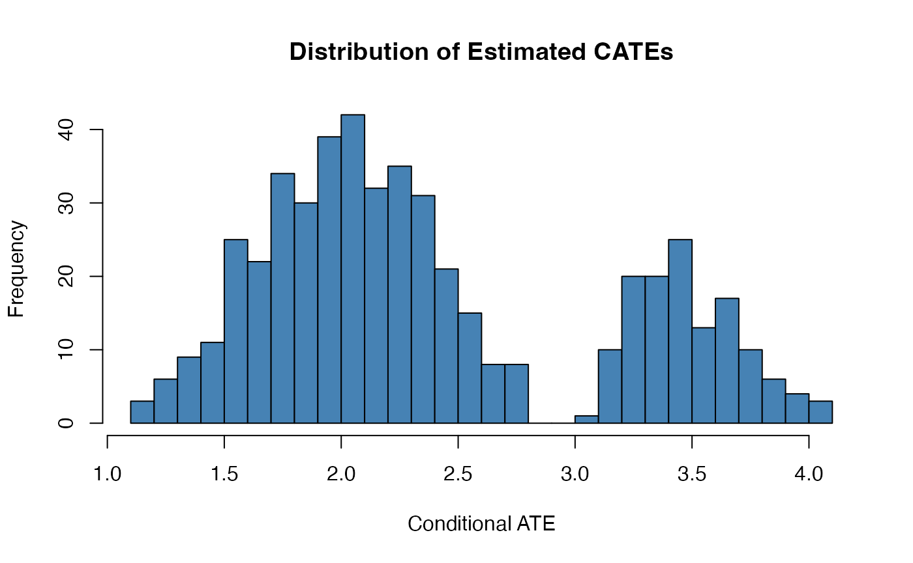
Causal forests are powerful but should be used with care:
grf implementation to provide valid confidence intervals.When an RCT has multiple outcome variables or multiple subgroup analyses, the probability of at least one false positive increases rapidly. With independent tests at significance level , the family-wise error rate (FWER) is:
For example, with outcomes and , the FWER is .
set.seed(42)
# Simulate additional outcome variables with varying treatment effects
rct_data$outcome2 <- 3 + 0.05 * rct_data$age +
0.8 * rct_data$treatment + rnorm(n, sd = 4)
rct_data$outcome3 <- 10 + 0.02 * rct_data$income +
0.1 * rct_data$treatment + rnorm(n, sd = 5) # small, likely non-significant effect
rct_data$outcome4 <- 20 + 1.5 * rct_data$educ +
0.0 * rct_data$treatment + rnorm(n, sd = 6) # true null (no effect)
rct_data$outcome5 <- -5 + 0.3 * rct_data$baseline +
1.8 * rct_data$treatment + rnorm(n, sd = 3)
outcomes <- c("outcome", "outcome2", "outcome3", "outcome4", "outcome5")
# Estimate treatment effects and extract p-values
effects_table <- lapply(outcomes, function(y) {
mod <- fixest::feols(as.formula(paste(y, "~ treatment")), data = rct_data)
ct <- summary(mod)$coeftable
data.frame(
outcome = y,
estimate = ct["treatment", "Estimate"],
se = ct["treatment", "Std. Error"],
p_raw = ct["treatment", "Pr(>|t|)"]
)
})
effects_table <- do.call(rbind, effects_table)
# Apply p-value corrections
effects_table$p_bonferroni <- p.adjust(effects_table$p_raw, method = "bonferroni")
effects_table$p_holm <- p.adjust(effects_table$p_raw, method = "holm")
effects_table$p_bh <- p.adjust(effects_table$p_raw, method = "BH")
# Round for display
effects_table[, -1] <- round(effects_table[, -1], 4)
effects_table
#> outcome estimate se p_raw p_bonferroni p_holm p_bh
#> 1 outcome 2.2111 0.5229 0.0000 0.0001 0.0001 0.0001
#> 2 outcome2 0.3543 0.3930 0.3678 1.0000 0.7355 0.4476
#> 3 outcome3 41.9375 28.2754 0.1387 0.6933 0.4160 0.2311
#> 4 outcome4 -0.4170 0.5487 0.4476 1.0000 0.7355 0.4476
#> 5 outcome5 1.4564 0.6775 0.0321 0.1603 0.1283 0.0802The three correction methods differ in what they control and how conservative they are:
| Method | Controls | Conservatism | Description |
|---|---|---|---|
| Bonferroni | FWER | Most conservative | Multiplies each p-value by . Simple but can be overly strict. |
| Holm | FWER | Less conservative than Bonferroni | Step-down procedure. Uniformly more powerful than Bonferroni. |
| Benjamini-Hochberg (BH) | FDR | Least conservative | Controls the false discovery rate. Preferred when many outcomes are tested. |
Recommendation: Use Holm for controlling the FWER (more powerful than Bonferroni with no additional assumptions). Use BH when the goal is to control the false discovery rate, which is appropriate in exploratory analyses with many outcomes.
Before running an RCT, power analysis determines the sample size needed to detect a given effect with a specified probability. The key inputs are:
The required sample size per group for a two-sample t-test is approximately:
We can use base R’s power.t.test():
# How many observations per group to detect an effect of 2.5
# with outcome SD ~ 5 (realistic with covariates), at 80% power?
power_result <- power.t.test(
delta = 2.5,
sd = 5,
power = 0.80,
sig.level = 0.05,
type = "two.sample"
)
power_result
#>
#> Two-sample t test power calculation
#>
#> n = 63.76576
#> delta = 2.5
#> sd = 5
#> sig.level = 0.05
#> power = 0.8
#> alternative = two.sided
#>
#> NOTE: n is number in *each* groupThis tells us we need approximately 64 observations per group (i.e., 128 total) to detect an effect of 2.5 with 80% power.
effect_sizes <- seq(0.5, 5, by = 0.25)
required_n <- sapply(effect_sizes, function(d) {
ceiling(power.t.test(delta = d, sd = 5, power = 0.80, sig.level = 0.05)$n)
})
power_eff_df <- data.frame(effect_size = effect_sizes, n_per_group = required_n)
ggplot(power_eff_df, aes(x = effect_size, y = n_per_group)) +
geom_line(linewidth = 1) +
geom_point(size = 1.5) +
labs(
x = "Minimum Detectable Effect",
y = "Required N per Group",
title = "Required Sample Size by Effect Size (Power = 0.80)"
) +
causalverse::ama_theme()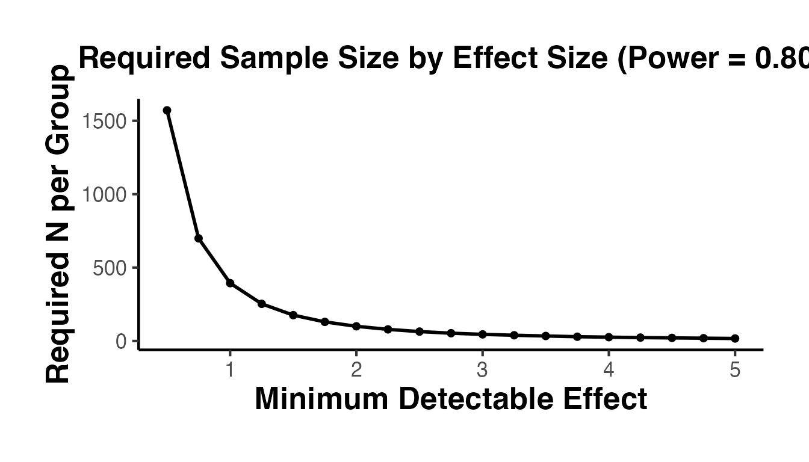
We can also visualize how power changes with sample size for a fixed effect size.
n_seq <- seq(10, 200, by = 5)
power_vals <- sapply(n_seq, function(n_per_group) {
power.t.test(n = n_per_group, delta = 2.5, sd = 5, sig.level = 0.05)$power
})
power_df <- data.frame(n_per_group = n_seq, power = power_vals)
ggplot(power_df, aes(x = n_per_group, y = power)) +
geom_line(linewidth = 1) +
geom_hline(yintercept = 0.80, linetype = "dashed", color = "red") +
geom_vline(
xintercept = ceiling(power.t.test(delta = 2.5, sd = 5, power = 0.80,
sig.level = 0.05)$n),
linetype = "dotted", color = "blue"
) +
annotate("text", x = 120, y = 0.75, label = "80% Power", color = "red") +
labs(
x = "Sample Size per Group",
y = "Statistical Power",
title = "Power Curve (Effect = 2.5, SD = 5, alpha = 0.05)"
) +
causalverse::ama_theme()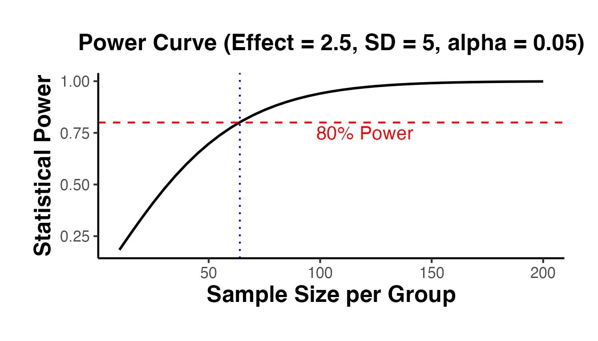
effect_grid <- c(1.0, 2.0, 2.5, 3.0, 4.0)
power_multi <- expand.grid(n_per_group = n_seq, effect = effect_grid)
power_multi$power <- mapply(function(nn, dd) {
power.t.test(n = nn, delta = dd, sd = 5, sig.level = 0.05)$power
}, power_multi$n_per_group, power_multi$effect)
ggplot(power_multi, aes(x = n_per_group, y = power, color = factor(effect))) +
geom_line(linewidth = 0.8) +
geom_hline(yintercept = 0.80, linetype = "dashed", color = "gray40") +
labs(
x = "Sample Size per Group",
y = "Statistical Power",
color = "Effect Size",
title = "Power Curves for Various Effect Sizes"
) +
causalverse::ama_theme()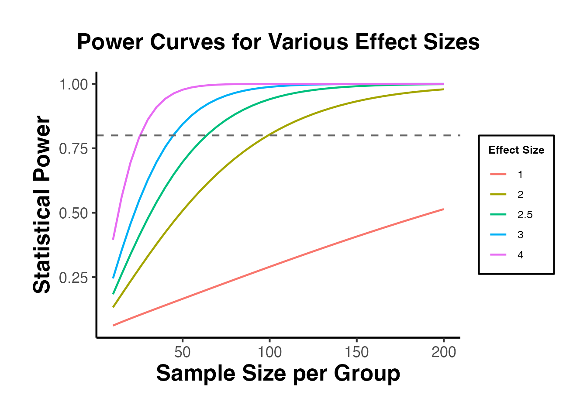
Covariate adjustment reduces residual variance, effectively increasing power. If covariates explain a fraction of outcome variance, the effective sample size is multiplied by .
# Without covariates (SD = 5)
n_no_cov <- ceiling(power.t.test(delta = 2.5, sd = 5, power = 0.80,
sig.level = 0.05)$n)
# With covariates explaining R^2 = 0.4 of variance
# Effective SD = 5 * sqrt(1 - 0.4) = 5 * 0.775
sd_adjusted <- 5 * sqrt(1 - 0.4)
n_with_cov <- ceiling(power.t.test(delta = 2.5, sd = sd_adjusted, power = 0.80,
sig.level = 0.05)$n)
cat("N per group without covariates:", n_no_cov, "\n")
#> N per group without covariates: 64
cat("N per group with covariates (R^2 = 0.4):", n_with_cov, "\n")
#> N per group with covariates (R^2 = 0.4): 39
cat("Sample size savings:", round((1 - n_with_cov / n_no_cov) * 100, 1), "%\n")
#> Sample size savings: 39.1 %This illustrates why collecting good baseline covariates is so valuable – it can dramatically reduce the required sample size.
In many settings, randomization occurs at the cluster level (e.g., schools, hospitals, villages) rather than the individual level. This arises when:
Clustering introduces intra-cluster correlation (ICC), which reduces the effective sample size and must be accounted for in standard error estimation.
The ICC () measures the fraction of total outcome variance that is between clusters:
The design effect (DEFF) quantifies how much clustering inflates variance relative to simple random sampling:
where is the average cluster size. The effective sample size is .
# Estimate the ICC from our data
# Fit a one-way random effects model
model_icc <- lm(outcome ~ cluster_id, data = rct_data)
anova_table <- anova(model_icc)
ms_between <- anova_table["cluster_id", "Mean Sq"]
ms_within <- anova_table["Residuals", "Mean Sq"]
m_avg <- nrow(rct_data) / length(unique(rct_data$cluster_id))
# ICC estimate
icc <- (ms_between - ms_within) / (ms_between + (m_avg - 1) * ms_within)
icc <- max(icc, 0) # ICC cannot be negative
cat("Estimated ICC:", round(icc, 4), "\n")
#> Estimated ICC: 0
cat("Average cluster size:", m_avg, "\n")
#> Average cluster size: 10
cat("Design effect:", round(1 + (m_avg - 1) * icc, 2), "\n")
#> Design effect: 1
cat("Effective sample size:", round(n / (1 + (m_avg - 1) * icc)), "\n")
#> Effective sample size: 500When analyzing cluster-randomized trials, standard errors must be clustered at the level of randomization.
# Cluster-robust standard errors with fixest
model_cluster <- fixest::feols(
outcome ~ treatment + age + income + educ + female + baseline,
cluster = ~cluster_id,
data = rct_data
)
summary(model_cluster)
#> OLS estimation, Dep. Var.: outcome
#> Observations: 500
#> Standard-errors: Clustered (cluster_id)
#> Estimate Std. Error t value Pr(>|t|)
#> (Intercept) 5.189078 1.20196780 4.31715 7.6658e-05 ***
#> treatment 2.419164 0.21831949 11.08084 5.9823e-15 ***
#> age 0.110802 0.01623864 6.82333 1.2459e-08 ***
#> income 0.000034 0.00000839 4.01512 2.0345e-04 ***
#> educ 1.441303 0.13019493 11.07035 6.1857e-15 ***
#> female 0.675895 0.26071195 2.59250 1.2524e-02 *
#> baseline 0.300224 0.00976433 30.74703 < 2.2e-16 ***
#> ---
#> Signif. codes: 0 '***' 0.001 '**' 0.01 '*' 0.05 '.' 0.1 ' ' 1
#> RMSE: 2.97984 Adj. R2: 0.742764
# Compare with non-clustered SEs
cat("\nSE (non-clustered):", round(summary(model_cov)$se["treatment"], 4), "\n")
#>
#> SE (non-clustered): 0.2707
cat("SE (cluster-robust):", round(summary(model_cluster)$se["treatment"], 4), "\n")
#> SE (cluster-robust): 0.2183Cluster-robust standard errors are typically larger than non-clustered standard errors, reflecting the reduced effective sample size due to within-cluster correlation.
Power calculations for cluster-randomized trials must account for the design effect.
# Parameters
n_clusters_total <- 50 # total clusters
m_per_cluster <- 10 # individuals per cluster
icc_assumed <- 0.05 # assumed ICC
delta <- 2.5
sd_outcome <- 5
# Design effect
deff <- 1 + (m_per_cluster - 1) * icc_assumed
# Effective N per group
n_eff_per_group <- (n_clusters_total / 2) * m_per_cluster / deff
# Power
power_cluster <- power.t.test(
n = n_eff_per_group,
delta = delta,
sd = sd_outcome,
sig.level = 0.05
)
cat("Design effect:", round(deff, 2), "\n")
#> Design effect: 1.45
cat("Effective N per group:", round(n_eff_per_group), "\n")
#> Effective N per group: 172
cat("Power:", round(power_cluster$power, 3), "\n")
#> Power: 0.996sensemakr
Even in an RCT, there may be concerns about threats to internal validity: non-compliance, differential attrition, or measurement error. The sensemakr package (Cinelli and Hazlett, 2020) provides tools for assessing sensitivity to potential omitted variable bias (OVB).
While RCTs are not typically subject to classical OVB (because randomization ensures no confounding), sensemakr is useful for:
library(sensemakr)
# Fit OLS model
model_sense <- lm(
outcome ~ treatment + age + income + educ + female + baseline,
data = rct_data
)
# Sensitivity analysis for the treatment coefficient
sense <- sensemakr(
model = model_sense,
treatment = "treatment",
benchmark_covariates = c("age", "income", "educ", "female", "baseline"),
kd = 1:3 # multiples of benchmark covariate strength
)
# Summary
summary(sense)
# Contour plot: how strong would a confounder need to be to
# explain away the treatment effect?
plot(sense)
# Extreme scenario plot
plot(sense, type = "extreme")
# Interpretation:
# The contour plot shows combinations of confounder strength
# (partial R^2 with treatment and outcome) that would bring
# the treatment estimate to zero. Points far from the origin
# indicate the result is robust.The key output is the robustness value (RV): the minimum strength of association a confounder would need to have with both the treatment and the outcome to explain away the estimated effect. A large RV indicates that the result is robust to potential confounding.
grf
Causal forests (Athey, Tibshirani, and Wager, 2019) are a powerful nonparametric method for estimating heterogeneous treatment effects. The grf (generalized random forests) package provides a principled framework for estimating conditional average treatment effects (CATEs) along with valid confidence intervals, variable importance measures, and calibration diagnostics.
Key features of causal forests:
We simulate an RCT where the treatment effect varies with a continuous covariate , creating genuine heterogeneity for the causal forest to detect.
set.seed(42)
n <- 2000
p <- 6
# Covariates
X <- matrix(rnorm(n * p), nrow = n)
colnames(X) <- paste0("X", 1:p)
# Treatment assignment (RCT)
W <- rbinom(n, 1, 0.5)
# Heterogeneous treatment effect: tau(x) = 1 + 2 * X1
tau_true <- 1 + 2 * X[, 1]
# Outcome with heterogeneous effect
Y <- 2 + X[, 1] + 0.5 * X[, 2] + tau_true * W + rnorm(n)
library(grf)
cf <- causal_forest(
X = X,
Y = Y,
W = W,
num.trees = 2000,
honesty = TRUE,
seed = 42
)
# Average Treatment Effect (ATE)
ate <- average_treatment_effect(cf, target.sample = "all")
cat(sprintf("ATE estimate: %.3f (SE: %.3f)\n", ate[1], ate[2]))
#> ATE estimate: 0.898 (SE: 0.065)
cat(sprintf("95%% CI: [%.3f, %.3f]\n",
ate[1] - 1.96 * ate[2],
ate[1] + 1.96 * ate[2]))
#> 95% CI: [0.770, 1.025]Variable importance ranks covariates by how frequently they are used for splitting. Covariates that drive heterogeneity should rank highest.
varimp <- variable_importance(cf)
varimp_df <- data.frame(
Variable = colnames(X),
Importance = as.numeric(varimp)
) |>
dplyr::arrange(dplyr::desc(Importance))
ggplot(varimp_df, aes(x = reorder(Variable, Importance), y = Importance)) +
geom_col(fill = "steelblue") +
coord_flip() +
labs(
title = "Causal Forest Variable Importance",
x = NULL, y = "Importance (split frequency)"
) +
causalverse::ama_theme()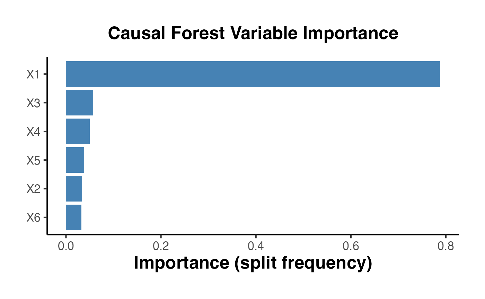
Individual-level CATE predictions enable targeting: identifying which units benefit most from treatment.
tau_hat <- predict(cf)$predictions
cate_df <- data.frame(
X1 = X[, 1],
tau_hat = tau_hat,
tau_true = tau_true
)
ggplot(cate_df, aes(x = X1)) +
geom_point(aes(y = tau_hat), alpha = 0.3, color = "steelblue", size = 0.8) +
geom_line(aes(y = tau_true), color = "red", linewidth = 1) +
labs(
title = "CATE Estimates vs. True Treatment Effect",
subtitle = "Red line = true tau(x); blue points = causal forest estimates",
x = "X1", y = "Treatment Effect"
) +
causalverse::ama_theme()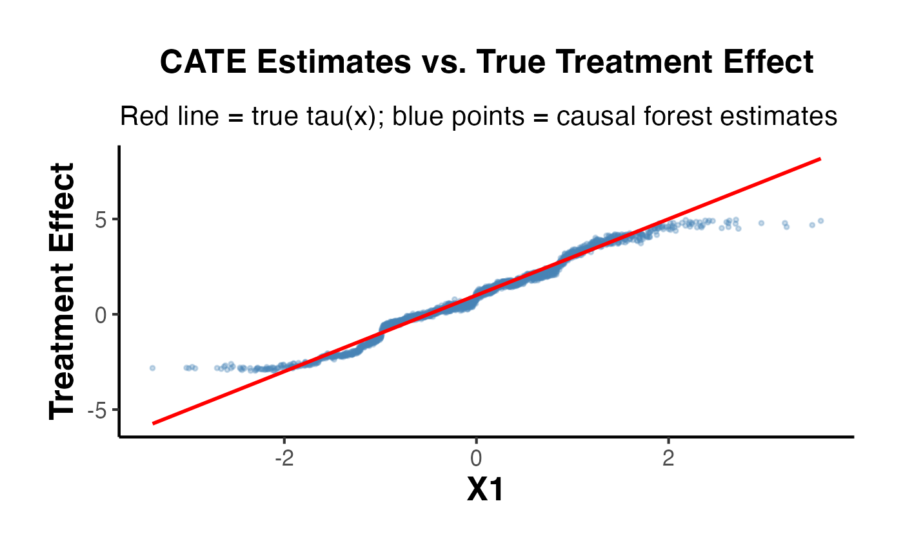
The best linear projection (BLP) tests whether treatment effect heterogeneity is systematically related to covariates. The calibration test checks whether the forest’s CATE predictions are well-calibrated.
# Best linear projection of CATEs on covariates
blp <- best_linear_projection(cf, X[, 1:3])
print(blp)
#>
#> Best linear projection of the conditional average treatment effect.
#> Confidence intervals are cluster- and heteroskedasticity-robust (HC3):
#>
#> Estimate Std. Error t value Pr(>|t|)
#> (Intercept) 0.928486 0.046961 19.7713 < 2e-16 ***
#> X1 2.032764 0.051470 39.4940 < 2e-16 ***
#> X2 -0.029064 0.050821 -0.5719 0.56746
#> X3 0.086055 0.045439 1.8939 0.05839 .
#> ---
#> Signif. codes: 0 '***' 0.001 '**' 0.01 '*' 0.05 '.' 0.1 ' ' 1
# Calibration test (Chernozhukov et al., 2022)
cal <- test_calibration(cf)
print(cal)
#>
#> Best linear fit using forest predictions (on held-out data)
#> as well as the mean forest prediction as regressors, along
#> with one-sided heteroskedasticity-robust (HC3) SEs:
#>
#> Estimate Std. Error t value Pr(>t)
#> mean.forest.prediction 0.996818 0.052173 19.106 < 2.2e-16 ***
#> differential.forest.prediction 1.049279 0.026268 39.944 < 2.2e-16 ***
#> ---
#> Signif. codes: 0 '***' 0.001 '**' 0.01 '*' 0.05 '.' 0.1 ' ' 1A well-calibrated forest should have a coefficient near 1 on the “mean.forest.prediction” term and a significant coefficient on the “differential.forest.prediction” term, indicating meaningful heterogeneity.
We can rank units by their predicted CATEs and examine how treatment effects vary across quantiles of the CATE distribution.
priority_df <- data.frame(
Y = Y, W = W, tau_hat = tau_hat
) |>
dplyr::mutate(
quartile = cut(
tau_hat,
breaks = quantile(tau_hat, probs = 0:4 / 4),
labels = paste0("Q", 1:4),
include.lowest = TRUE
)
)
group_effects <- priority_df |>
dplyr::group_by(quartile) |>
dplyr::summarise(
mean_effect = mean(Y[W == 1]) - mean(Y[W == 0]),
n = dplyr::n(),
.groups = "drop"
)
ggplot(group_effects, aes(x = quartile, y = mean_effect)) +
geom_col(fill = "steelblue") +
labs(
title = "Treatment Effect by CATE Quartile",
x = "CATE Quartile (Q1 = lowest predicted effect)",
y = "Observed Mean Effect"
) +
causalverse::ama_theme()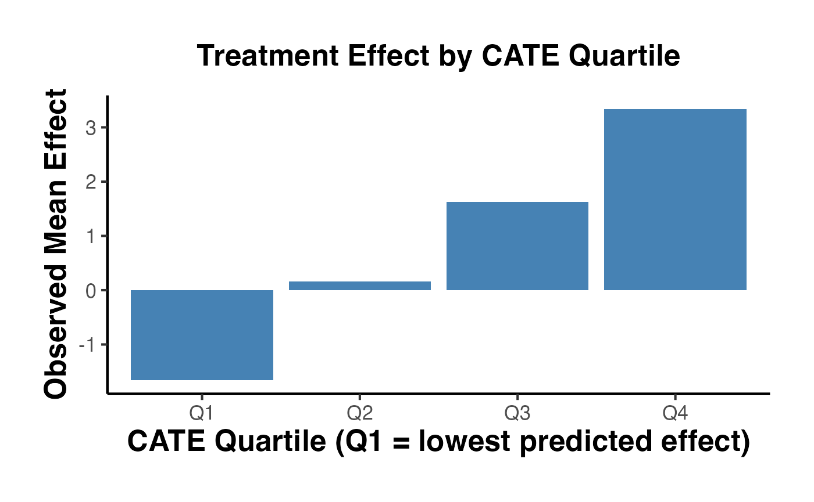
DoubleML
Double/debiased machine learning (DML) is a general framework introduced by Chernozhukov et al. (2018) for estimating causal parameters while using flexible machine learning methods for nuisance parameter estimation. The key insight is that naive plug-in of ML predictions leads to regularization bias, but a Neyman-orthogonal score combined with cross-fitting eliminates this bias.
The framework proceeds in three steps:
The partially linear model is:
where is the causal parameter of interest.
library(DoubleML)
library(mlr3)
library(mlr3learners)
set.seed(42)
n <- 1000
# Simulate data
X1 <- rnorm(n)
X2 <- rnorm(n)
X3 <- rnorm(n)
D <- 0.5 * X1 + 0.3 * X2 + rnorm(n) # treatment
Y <- 2 * D + sin(X1) + X2^2 + 0.5 * X3 + rnorm(n) # outcome
dt <- data.table::data.table(Y = Y, D = D, X1 = X1, X2 = X2, X3 = X3)
dml_data <- DoubleMLData$new(
dt,
y_col = "Y",
d_cols = "D",
x_cols = c("X1", "X2", "X3")
)
# Random forest as the ML learner
learner_rf <- lrn("regr.ranger", num.trees = 500)
# PLR with cross-fitting (5 folds)
dml_plr <- DoubleMLPLR$new(
dml_data,
ml_l = learner_rf$clone(),
ml_m = learner_rf$clone(),
n_folds = 5
)
dml_plr$fit()
cat("PLR Results:\n")
print(dml_plr$summary())For binary treatments, the IRM (also called the AIPW/doubly-robust estimand) estimates the ATE:
set.seed(42)
n <- 1000
X1 <- rnorm(n)
X2 <- rnorm(n)
X3 <- rnorm(n)
prob_treat <- plogis(0.5 * X1 + 0.3 * X2)
D <- rbinom(n, 1, prob_treat)
Y <- 1.5 * D + sin(X1) + X2^2 + rnorm(n)
dt_irm <- data.table::data.table(Y = Y, D = D, X1 = X1, X2 = X2, X3 = X3)
dml_data_irm <- DoubleMLData$new(
dt_irm,
y_col = "Y",
d_cols = "D",
x_cols = c("X1", "X2", "X3")
)
learner_reg <- lrn("regr.ranger", num.trees = 500)
learner_cls <- lrn("classif.ranger", num.trees = 500)
dml_irm <- DoubleMLIRM$new(
dml_data_irm,
ml_g = learner_reg$clone(),
ml_m = learner_cls$clone(),
n_folds = 5
)
dml_irm$fit()
cat("IRM Results:\n")
print(dml_irm$summary())The IRM estimator is doubly robust: it remains consistent if either the outcome model or the propensity score model is correctly specified, but not necessarily both.
| Model | Use Case | Treatment | Key Advantage |
|---|---|---|---|
| PLR | Continuous or binary treatment | Continuous / Binary | Partially linear; fast |
| IRM | Binary treatment, ATE | Binary | Doubly robust |
| IIVM | Binary treatment with instrument | Binary (with IV) | Handles non-compliance |
| PLIV | Continuous treatment with instrument | Continuous (with IV) | Partially linear IV |
bartCause
Bayesian Additive Regression Trees (BART) provide a flexible nonparametric approach to estimating causal effects. The bartCause package (Dorie, 2023) wraps BART for causal inference, automatically handling the response surface modeling and providing posterior distributions of treatment effects.
Key advantages of BART for causal inference:
library(bartCause)
set.seed(42)
n <- 500
# Covariates
x1 <- rnorm(n)
x2 <- rnorm(n)
x3 <- rbinom(n, 1, 0.5)
# Treatment assignment (depends on covariates)
prob_treat <- plogis(0.5 * x1 + 0.3 * x2 - 0.2 * x3)
treatment <- rbinom(n, 1, prob_treat)
# Outcome with nonlinear confounding
y <- 3 + sin(x1) + x2^2 + 1.5 * treatment + rnorm(n)
# Fit bartc for ATE
fit_ate <- bartc(
response = y,
treatment = treatment,
confounders = data.frame(x1, x2, x3),
estimand = "ate",
seed = 42,
verbose = FALSE
)
summary(fit_ate)
fit_att <- bartc(
response = y,
treatment = treatment,
confounders = data.frame(x1, x2, x3),
estimand = "att",
seed = 42,
verbose = FALSE
)
summary(fit_att)
# Extract posterior samples
posterior_ate <- extract(fit_ate, type = "icate")
posterior_means <- colMeans(posterior_ate)
post_df <- data.frame(ate = as.numeric(fitted(fit_ate, type = "icate")))
ggplot(post_df, aes(x = ate)) +
geom_histogram(bins = 40, fill = "steelblue", color = "white", alpha = 0.8) +
geom_vline(xintercept = mean(post_df$ate), color = "red", linewidth = 1) +
labs(
title = "Posterior Distribution of Individual Treatment Effects (BART)",
x = "Individual Causal Effect",
y = "Count"
) +
causalverse::ama_theme()policytree
Given estimated heterogeneous treatment effects, a natural next question is: who should be treated? The policytree package (Sverdrup et al., 2020) learns shallow, interpretable decision trees that map covariates to treatment recommendations, optimizing a welfare criterion based on doubly robust scores.
We first use a causal forest to obtain doubly robust scores (augmented inverse-propensity weighted estimates of individual treatment effects).
library(policytree)
library(grf)
set.seed(42)
n <- 2000
p <- 5
X <- matrix(rnorm(n * p), nrow = n)
colnames(X) <- paste0("X", 1:p)
W <- rbinom(n, 1, 0.5)
tau_true <- ifelse(X[, 1] > 0 & X[, 2] > 0, 3, 0.5)
Y <- X[, 1] + tau_true * W + rnorm(n)
# Fit causal forest
cf <- causal_forest(X, Y, W, num.trees = 2000, seed = 42)
# Doubly robust scores
dr_scores <- double_robust_scores(cf)
head(dr_scores)
#> control treated
#> [1,] 1.62615950 3.7724979
#> [2,] 0.35937549 -0.1786921
#> [3,] -2.50583379 0.9284773
#> [4,] 0.68028958 3.1278853
#> [5,] 1.57273636 0.8700906
#> [6,] -0.06522897 0.2761581
# Depth-2 policy tree for interpretability
ptree <- policy_tree(X, dr_scores, depth = 2)
print(ptree)
#> policy_tree object
#> Tree depth: 2
#> Actions: 1: control 2: treated
#> Variable splits:
#> (1) split_variable: X5 split_value: -1.44615
#> (2) split_variable: X5 split_value: -1.51447
#> (4) * action: 2
#> (5) * action: 1
#> (3) split_variable: X2 split_value: -2.40936
#> (6) * action: 1
#> (7) * action: 2
plot(ptree)
# Predicted optimal treatment for each unit
recommended <- predict(ptree, X)
eval_df <- data.frame(
recommended = factor(recommended),
tau_true = tau_true
)
eval_summary <- eval_df |>
dplyr::group_by(recommended) |>
dplyr::summarise(
mean_true_effect = mean(tau_true),
n = dplyr::n(),
.groups = "drop"
)
print(eval_summary)
#> # A tibble: 2 × 3
#> recommended mean_true_effect n
#> <fct> <dbl> <int>
#> 1 1 0.798 42
#> 2 2 1.13 1958Units recommended for treatment (action 2) should have systematically higher true treatment effects than those recommended for control (action 1), validating the policy tree’s ability to identify who benefits most.
In traditional RCTs, treatment assignment probabilities are fixed throughout the experiment. Adaptive experiments update assignment probabilities during the trial based on accumulating evidence, potentially improving both statistical efficiency and ethical outcomes (by assigning fewer units to inferior arms).
However, adaptive assignment complicates inference because treatment probabilities vary across units and depend on past outcomes. The banditsCI package provides tools for valid inference from adaptively collected data.
library(banditsCI)
set.seed(42)
# Simulate a two-arm bandit problem
n <- 500
K <- 2 # number of arms
# True mean rewards
mu <- c(0.3, 0.5) # Arm 2 is better
# Run Thompson sampling
result <- run_experiment(
means = mu,
noise = rep(1, K),
num_obs = n,
policy = "thompson",
num_arms = K
)
# AIPW estimator for adaptively collected data
aipw_result <- estimate_aipw(result)
print(aipw_result)| Concept | Description |
|---|---|
| Thompson Sampling | Assigns treatment proportional to posterior probability of being optimal |
| AIPW Estimator | Augmented IPW adjusts for time-varying assignment probabilities |
| Regret | Cumulative loss from not always assigning the best arm |
| Adaptivity Bias | Naive estimators are biased under adaptive assignment; AIPW corrects this |
The AIPW estimator from Hadad et al. (2021) uses importance weighting with stabilized weights to provide consistent, asymptotically normal estimates of arm-specific means even under adaptive assignment.
Simple random assignment can produce covariate imbalance by chance, especially in small experiments. Covariate-adaptive randomization techniques improve balance by incorporating covariate information into the assignment mechanism. The randomizr package provides convenient tools for common designs.
Block randomization ensures exact balance within strata defined by discrete covariates.
library(randomizr)
set.seed(42)
n <- 200
# Covariates
gender <- sample(c("Male", "Female"), n, replace = TRUE)
age_group <- sample(c("Young", "Middle", "Old"), n, replace = TRUE)
strata <- paste(gender, age_group, sep = "_")
# Block randomization
Z_block <- block_ra(blocks = strata)
table(strata, Z_block)When individual randomization is infeasible (e.g., classrooms, villages), entire clusters are assigned to treatment.
set.seed(42)
n <- 300
clusters <- rep(1:30, each = 10) # 30 clusters of 10
Z_cluster <- cluster_ra(clusters = clusters)
# Verify: all units in a cluster get the same assignment
cluster_check <- data.frame(cluster = clusters, Z = Z_cluster) |>
dplyr::group_by(cluster) |>
dplyr::summarise(n_treat = sum(Z), n_ctrl = sum(1 - Z), .groups = "drop")
head(cluster_check, 10)Combining blocking and clustering ensures balance across strata while respecting cluster structure.
set.seed(42)
n <- 300
clusters <- rep(1:30, each = 10)
region <- rep(rep(c("North", "South", "East"), each = 10), 10)[1:n]
# Block on region, randomize at cluster level
Z_bc <- block_and_cluster_ra(
blocks = region,
clusters = clusters
)
bc_table <- data.frame(region = region, cluster = clusters, Z = Z_bc) |>
dplyr::distinct(cluster, .keep_all = TRUE)
table(bc_table$region, bc_table$Z)Rerandomization (Morgan and Rubin, 2012) repeatedly draws random assignments and accepts only those that meet a balance criterion (e.g., Mahalanobis distance below a threshold). While randomizr does not directly implement rerandomization, it is straightforward to implement using rejection sampling.
set.seed(42)
n <- 100
X <- data.frame(x1 = rnorm(n), x2 = rnorm(n), x3 = rnorm(n))
# Mahalanobis distance threshold (accept top 10% of assignments)
mahal_threshold <- qchisq(0.9, df = ncol(X))
accept <- FALSE
attempts <- 0
while (!accept) {
attempts <- attempts + 1
Z_cand <- complete_ra(N = n)
# Compute Mahalanobis distance of mean differences
X_t <- X[Z_cand == 1, ]
X_c <- X[Z_cand == 0, ]
diff_means <- colMeans(X_t) - colMeans(X_c)
S_pooled <- cov(X) * (1 / sum(Z_cand == 1) + 1 / sum(Z_cand == 0))
M <- as.numeric(t(diff_means) %*% solve(S_pooled) %*% diff_means)
if (M < mahal_threshold) accept <- TRUE
}
cat(sprintf("Accepted assignment after %d attempts (M = %.3f, threshold = %.3f)\n",
attempts, M, mahal_threshold))
# Verify balance
bal <- data.frame(
Variable = names(X),
Mean_Treat = colMeans(X[Z_cand == 1, ]),
Mean_Ctrl = colMeans(X[Z_cand == 0, ]),
Diff = colMeans(X[Z_cand == 1, ]) - colMeans(X[Z_cand == 0, ])
)
print(bal)Pre-registration is the practice of publicly declaring the research design, hypotheses, primary outcomes, and analysis plan before collecting data. This prevents:
Common registries include the AEA RCT Registry, ClinicalTrials.gov, and the Open Science Framework (OSF).
The CONSORT (Consolidated Standards of Reporting Trials) statement provides guidelines for reporting RCTs transparently. The CONSORT flow diagram tracks participants through four stages:
Reporting a CONSORT diagram is considered best practice for any RCT publication.
The following checklist summarizes the key steps in analyzing an RCT:
| Step | Description | Tool / Function |
|---|---|---|
| 1. Data preparation | Clean data, define variables | Base R / dplyr
|
| 2. Balance checking | Verify covariate balance |
causalverse::balance_assessment(), causalverse::plot_density_by_treatment(), SMD table |
| 3. Primary analysis | Estimate ATE (difference in means) |
t.test(), fixest::feols(), estimatr::difference_in_means()
|
| 4. Covariate adjustment | Improve precision |
fixest::feols(), estimatr::lm_lin()
|
| 5. Robust SEs | Account for heteroskedasticity/clustering |
estimatr::lm_robust(), fixest::feols(cluster = ~)
|
| 6. Heterogeneity | Examine treatment effect variation | Interaction models, subgroup analysis, grf::causal_forest()
|
| 7. Multiple testing | Correct for multiple comparisons |
p.adjust() (Holm, BH) |
| 8. Sensitivity | Assess robustness | sensemakr::sensemakr() |
| 9. Reporting | CONSORT diagram, effect sizes, CIs |
This vignette covered the essential theory and practice of analyzing Randomized Control Trials:
| Topic | Section | Key Tools |
|---|---|---|
| Potential outcomes framework | 1 | Mathematical notation |
| Simulated RCT data | 2 | Base R |
| Balance checking | 3 |
causalverse::balance_assessment(), causalverse::plot_density_by_treatment(), SMD |
| Difference in means | 4.1 | t.test() |
| OLS regression | 4.2–4.5 | fixest::feols() |
| Lin (2013) estimator | 4.4 |
fixest::feols(), estimatr::lm_lin()
|
| Robust standard errors | 5 | estimatr::lm_robust() |
| Randomization inference | 6 | ri2::conduct_ri() |
| Experimental design | 7 | DeclareDesign |
| Randomization schemes | 8 | randomizr |
| Heterogeneous effects | 9 | Interactions, grf::causal_forest()
|
| Multiple testing | 10 | p.adjust() |
| Power analysis | 11 | power.t.test() |
| Cluster-randomized trials | 12 | Cluster-robust SEs, ICC, design effect |
| Sensitivity analysis | 13 | sensemakr |
| Causal forests | 14 |
grf::causal_forest(), average_treatment_effect(), test_calibration()
|
| Double/debiased ML | 15 |
DoubleML::DoubleMLPLR, DoubleML::DoubleMLIRM
|
| BART causal inference | 16 | bartCause::bartc() |
| Optimal treatment rules | 17 |
policytree::policy_tree(), double_robust_scores()
|
| Adaptive experiments | 18 |
banditsCI, Thompson sampling, AIPW |
| Covariate-adaptive randomization | 19 |
randomizr::block_ra(), randomizr::cluster_ra(), rerandomization |
| Practical guidelines | 20 | CONSORT, pre-registration |
For quasi-experimental methods when randomization is not possible, see the other vignettes in the causalverse package (Difference-in-Differences, Synthetic Control, Regression Discontinuity, etc.).